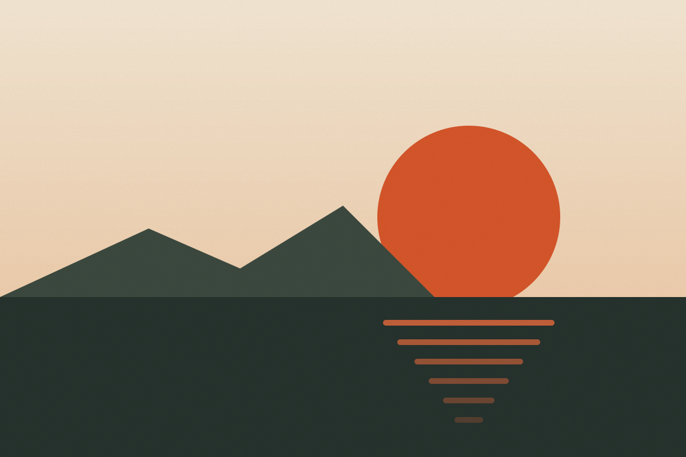

Design · Essay
The case for slower software
Speed is a feature, but so is the time to think. Notes on building tools that respect attention.
By Jonah Reyes
· 4 min read

Every few years the software we use gets faster, and every few years we find new ways to fill the time it saves. Notifications arrive before we finish reading the last one. Feeds refresh themselves while we are still scrolling. The tools are quick; we are the ones who feel slow.
This is not an argument against performance. A fast interface is a kind of respect: it tells the person on the other side of the screen that their time matters. But there is a difference between software that responds quickly and software that demands quickly, and a great deal of what we build today has drifted toward the second.
Over the past year I have interviewed forty-two people who build and use productivity tools for a living. Almost all of them described the same feeling: a low, constant hum of obligation coming from the apps they rely on. Very few of them could point to a single feature that caused it.
That is the strange thing about the problem. No product manager ever set out to make their users anxious. Each badge, banner and reminder was added for a sensible reason, approved in a sensible meeting and measured with a sensible metric. It is only when you add them all together, across every app on someone’s phone, that the sum stops making sense.
Attention is the real budget
When we design a feature we count clicks, milliseconds and pixels. We rarely count interruptions. Yet the cost of a single badge or banner is paid every time someone glances at it, multiplied across every person who uses the product, every day they use it.
Teams measure engagement because it is easy to measure. Nobody has a dashboard for the afternoon a user did not lose. So the incentives quietly push every product toward more pings, more red dots and more reasons to come back, whether or not coming back helps anyone.1
Psychologists have a useful name for what happens next: attention residue. When you switch away from a task, part of your mind stays with it for minutes afterwards. A notification that takes two seconds to dismiss can cost twenty minutes of thinking at full depth. Multiply that by the forty or fifty interruptions a typical knowledge worker receives in a day and the arithmetic becomes uncomfortable.
If attention is the scarce resource, then every interface is spending someone else’s budget. The question is not whether a feature is useful in isolation. It is whether it is worth what it costs, paid in the only currency that never comes back.
The cost of a single badge
To make this concrete, one team I spoke to ran a simple experiment. For two weeks they moved every non-urgent notification in their internal tools into a twice-daily digest. Nothing else changed: same people, same projects, same deadlines.
Interruptions fell by roughly seventy percent. More surprising was what did not happen: no deadline slipped, no customer complained, and only two alerts in the whole two weeks turned out to need a faster response. Both were already marked as urgent.
Designing for the second visit
First impressions get most of the design attention, but people live in the hundredth visit. The onboarding flow is seen once; the inbox is seen every morning for years. Slower software is software that still feels calm on the hundredth day: predictable, legible and patient.
“The best tools disappear while you use them, and are still there when you look up.”
Ana Ferreira, deputy editor
Calm is not the same as empty. A calm interface can be dense with information, as long as nothing in it is shouting. Typography, spacing and restraint with color do most of the work. The rest is deciding, feature by feature, what deserves to interrupt someone.
Some of the calmest software I know is also some of the oldest. A good text editor, a well-made calendar, a command line that does exactly what it is told. None of them try to bring you back. They wait, patiently, until you have something to do, and then they get out of the way as quickly as they can.
A practical playbook
None of this requires new technology. Here are the habits that came up again and again in my interviews:
- Batch by default. Let people opt into real-time, not out of it.
- Prefer pull over push. Show what changed when someone arrives, not the moment it happens.
- Make the quiet state beautiful. An empty inbox should feel finished, not broken.
- Respect the clock. Quiet hours should be on by default and match the user’s time zone.
In code, the change is often tiny. This is roughly how the team above configured their digest:
// Batch non-urgent events into a twice-daily digest.
const digest = createDigest({
schedule: ['09:00', '15:00'],
quietHours: { start: '19:00', end: '08:00' },
// Only genuinely urgent events skip the queue.
urgent: (event) => event.severity === 'critical',
});What we give up, and what we get back
There is a real cost. Slower software will sometimes deliver news a few hours late. A few metrics on a growth dashboard will dip. Somebody, somewhere, will ask why the red dot went away.
That is a trade worth making in the open. Tell your team why the change is happening, tell your users what to expect, and give anyone who genuinely needs real-time updates an easy way to turn them back on. Most will not. The few who do will be grateful you asked.
What we get back is harder to chart: the long, uninterrupted stretch of an afternoon in which someone does the best work of their week. That is what most of our tools promised in the first place. It might be time we let them keep the promise.2
Notes
Written by
Jonah Reyes
Jonah founded The Ledger in 2019 after a decade designing productivity software. He writes about defaults, attention and the ethics of interfaces.
More from Jonah